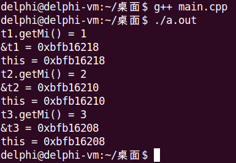
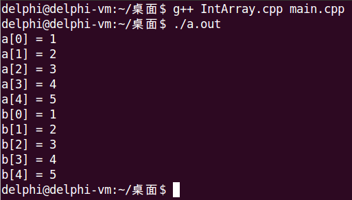

目录
~ClassName()多个对象构造时：
多个对象析构时：
单个对象创建时，对象内部构造函数的调用顺序为：
单个对象内部的析构顺序与构造顺序相反。
const成员函数的定义如下所示，需要注意的是，函数声明和函数定义都必须带const关键字。
Type ClassName :: func(Type para) const关于const成员函数的使用，有下面几条规则：
#include <stdio.h>
class Test
{
int mi;
public:
Test(int i);
void setMi(int i) const;
int getMi() const;
void printMi();
};
Test::Test(int i)
{
mi = i;
}
void Test::setMi(int i) const
{
mi = i; //Error，const成员函数中不能直接修改成员变量的值
}
int Test::getMi() const
{
return mi;
}
void Test::printMi()
{
printf("printMi(): mi = %d\n", mi);
}
int main()
{
const Test t1(1);
t1.getMi(); //OK，const对象调用const成员函数
t1.printMi(); //Error，const对象调用普通成员函数
return 0;
}从面向对象的角度，对象由属性（成员变量）和方法（成员函数）构成；
从程序运行的角度，对象由数据和函数构成，数据位于栈、堆或全局数据区，函数位于代码段。
#include <stdio.h>
class Test
{
int mi;
public:
int mj;
Test(int i);
Test(const Test &t);
int getMi();
void print();
};
Test::Test(int i)
{
mi = i;
}
Test::Test(const Test &t)
{
mi = t.mi; //成员函数可以直接访问对应类对象的成员变量
}
int Test::getMi()
{
return mi;
}
void Test::print()
{
printf("this = %p\n", this); //每个成员函数中隐藏了一个this指针，用于指向当前对象
}
int main()
{
Test t1(1);
Test t2(2);
Test t3(3);
printf("t1.getMi() = %d\n", t1.getMi());
printf("&t1 = %p\n", &t1);
t1.print();
printf("t2.getMi() = %d\n", t2.getMi());
printf("&t2 = %p\n", &t2);
t2.print();
printf("t3.getMi() = %d\n", t3.getMi());
printf("&t3 = %p\n", &t3);
t3.print();
return 0;
}
#ifndef _INTARRAY_H_
#define _INTARRAY_H_
class IntArray
{
private:
int m_length;
int *m_pointer;
public:
IntArray(int len);
IntArray(const IntArray &obj);
int length();
bool get(int index, int &value);
bool set(int index ,int value);
~IntArray();
};
#endif#include "IntArray.h"
IntArray::IntArray(int len)
{
m_pointer = new int[len];
for(int i=0; i<len; i++)
{
m_pointer[i] = 0;
}
m_length = len;
}
IntArray::IntArray(const IntArray &obj)
{
m_length = obj.m_length;
m_pointer = new int[obj.m_length];
for(int i = 0; i < obj.m_length; i++)
{
m_pointer[i] = obj.m_pointer[i];
}
}
int IntArray::length()
{
return m_length;
}
bool IntArray::get(int index, int &value)
{
bool ret = (0 <= index) && (index < length());
if( ret )
{
value = m_pointer[index];
}
return ret;
}
bool IntArray::set(int index, int value)
{
bool ret = (0 <= index) && (index < length());
if( ret )
{
m_pointer[index] = value;
}
return ret;
}
IntArray::~IntArray()
{
delete[] m_pointer;
}#include "IntArray.h"
#include <stdio.h>
int main()
{
IntArray a(5);
for(int i = 0; i < a.length(); i++)
{
a.set(i, i + 1);
}
for(int i = 0; i < a.length(); i++)
{
int value = 0;
if( a.get(i, value) )
{
printf("a[%d] = %d\n", i, value);
}
}
IntArray b = a;
for(int i = 0; i < b.length(); i++)
{
int value = 0;
if( b.get(i, value) )
{
printf("b[%d] = %d\n", i, value);
}
}
return 0;
}